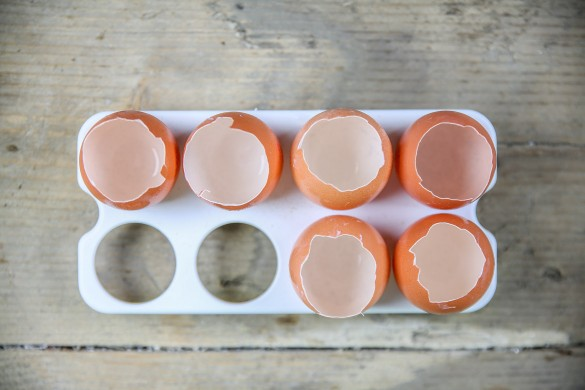
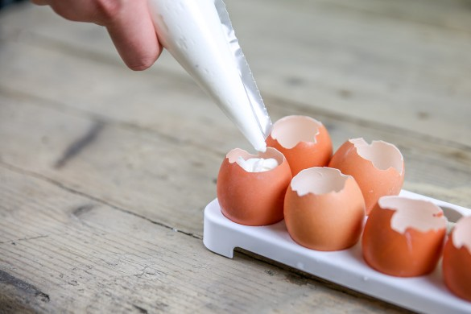
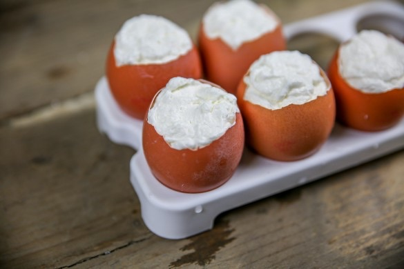
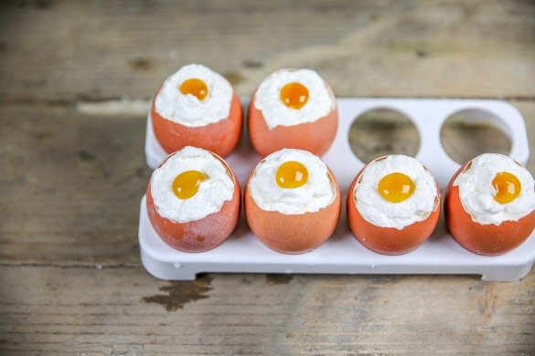
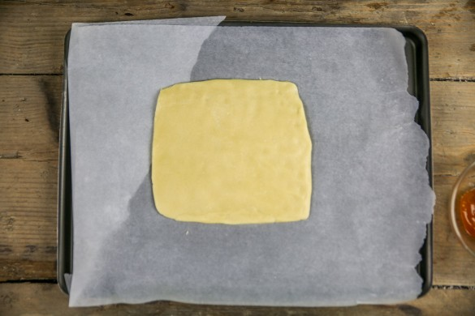
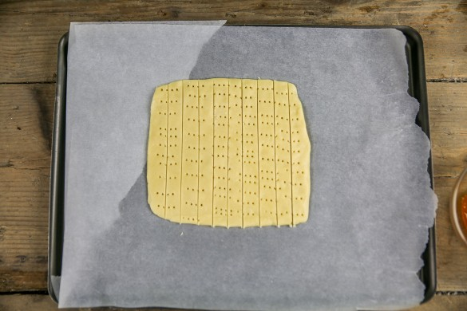

Cheesecake de Pâques comme un œuf à la coque

Si vous me suivez sur Instagram vous avez dû remarquer qu’une recette de Pâques allait bientôt être publiée par ici! En effet, aujourd’hui je vous propose de faire un cheesecake de Pâques qui ressemble à un œuf à la coque (et attention même les mouillettes sont au programme!)
L’année dernière je m’étais prise au jeu de Pâques en faisant moi-même mes œufs de Pâques en chocolat, cette année les œufs sont déjà prêts il n’y a plus qu’à les fourrer (et quoi de mieux qu’une crème façon cheesecake)!
Je peux vous dire que ces cheesecakes de Pâques feront fureur, illusion (car ils jouent parfaitement leur rôle d’œufs à la coque) et qu’ils se dégustent sans faim (et sans aucune culpabilité) grâce à leur petite taille.
Comme je vous l’explique dans la recette vous pouvez les aromatiser à ce que vous préférez. Par exemple ici j’ai ajouté de la poudre de noix de coco mais vous pouvez ajouter des zestes d’oranges, de citron, de la vanille etc… Pour le dessus, (ce qui fait office de jaunes d’œufs), vous pouvez prendre de la confiture de mangue, d’abricot, de pêche, d’orange amère etc etc… Et comme c’est vous qui préparez le dessert et que vous ne voulez peut-être pas faire un jaune d’œufs vous pouvez mettre de la pâte à tartiner, de la pâte de spéculoos, du beurre de cacahuètes, de la confiture de fraises etc… Bref c’est vous qui décidez et ce qui compte c’est que vous aimiez 🙂 Franchement, en faisant cette recette je ne pensais pas être aussi fan de ce que j’appelle maintenant mes petits « cheesecake de Pâques » et je peux vous assurer que Pâques ou pas Pâques je vais réitérer l’expérience en faisant varier les goûts car c’était juste une petite merveille que nous avons adoré!! Si vous avez des enfants c’est aussi un bon plan pour les occuper et pourquoi pas leur faire décorer les œufs (ici j’ai utilisé un feutre alimentaire noir tout simple mais libre à vous de laisser libre cours à votre imagination!) Je vous laisse à présent découvrir ces petits cheesecakes déguisés en œufs à la coque et si vous tentez cette recette venez me dire ce que vous en avez pensé 🙂
Ingrédients
- Oeufs - 6 (8 s'ils sont petits)
- Crème fleurette entière à 30% - 150ml
- Philadelphia (cream cheese type St Môret etc..) - 85g
- Sucre glace - 20g
- Zeste de citron, noix de coco râpée, gousse de vanille (arôme de votre choix)
- Confiture - environ 20g
- Farine - 90g
- Maïzena - 25g
- Sucre - 20g
- Sel - 1 pincée
- Beurre - 60g
Instructions
- Préparer vos œufs ; Découper délicatement 1/4 de chaque coquille de vos œufs (sinon à chaque fois que vous en utilisez gardez-les coquilles au fur et à mesure) Enlever la pellicule blanche qui est à l'intérieur en douceur Faire bouillir de l'eau et placez-y les coquilles vides à l'intérieur (pour tuer les germes qui pourraient s'y trouver) Laissez-les sécher et commencer la préparation de la crème
- Dans le bol de votre robot, verser la crème fleurette (bien froide), le cream cheese et le sucre glace
- Battre pendant 5 bonnes minutes jusqu'à obtenir une crème bien ferme
- Ajouter l'arôme de votre choix (moi j'ai mis 1CAS+1/2 de noix de coco râpée mais vous pouvez ajouter les graines d'une gousse de vanille, des zestes de citron etc... c'est à vous de voir!!)
- A l'aide d'une poche à douille (ou d'une petite cuillère si vous êtes délicats) remplissez vos coquilles vides
- A l'aide d'une petite seringue, d'une poche à douilles ou d'une petite cuillère faites le jaune d’œufs avec de la confiture (mangue-abricot pour moi). Et si vous ne voulez pas faire "illusion" avec un faux jaune d’œufs vous pouvez mettre du nutella, de la pâte de spéculoos etc...
- Placer au frais jusqu'au moment de servir (minimum 30 minutes)
- Dans un saladier ou dans le bol de votre robot, battre le sucre et le beurre jusqu'à obtenir un mélange crémeux
- Mélanger la farine avec la maïzena et la pincée de sel
- Ajouter ce mélange au mélange beurre-sucre
- Étaler la pâte sous la forme d'un carré avec une épaisseur d'environ 5 mm
- Tracer des séparations à l'aide d'un couteau et piquer la pâte avec une fourchette Quand les sablés seront cuits il ne vous restera plus qu'à les découper selon les lignes que vous aurez préalablement tracées (attention les sablés sont très friables)
- Enfourner à 180° pendant 20 minutes (surveiller la cuisson)
- Laisser refroidir les sablés
- Découpez-les selon les lignes tracées
- Vous mouillettes sont prêtes!!






Les tips de la communauté
Les commentaires ne contiennent pas d'informations exploitables supplémentaires.